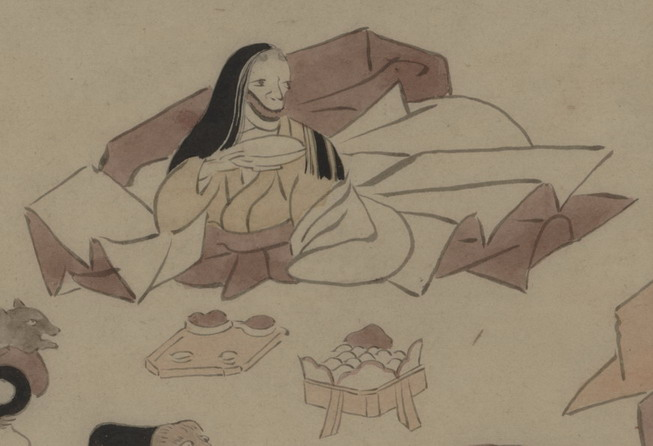

女房装束の化物。長い髪を背まで垂らし、口は横に大きく裂けている。座って、盃をてにしている。手前には食べ物が載った折敷が置かれている。
出典：親書誌：U426_nichibunken_0150：付喪神絵詞；ツクモガミエコトバ／日付：2010／資源識別子：U426_nichibunken_0150_0035_0000
Copyright (c)2010- International Research Center for Japanese Studies, Kyoto, Japan. All rights reserved.